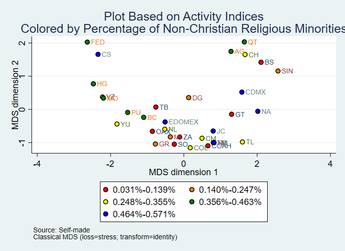

Appendix: Figures, Tables, and Graphs
Select a figure, table, or graph from the dropdown menu to view:
Figure 1: Additive Indices
Note: Note. By applying content analysis to laws and government documents from religious affairs offices across all states, I created a dataset that tracks the specific activities of each office through dichotomous variables. This figure presents four additive indices derived from these variables. The first index reflects their role in handling service requests and representing the government to religious associations. The second tracks the legal registration of religious organizations. The third highlights peacebuilding efforts and the resolution of religious conflicts, while the fourth measures activities related to promoting secularism and monitoring religious organizations. All indices show a scale reliability coefficient (SRC) greater than 0.7, confirming their validity.
Table 1: Mean Values of Clusters
Note. Based on the previously shown indices, I divided the observations in the dataset using cluster analysis. This classification groups the religious affairs offices across the country according to the activities they perform. This table presents the mean values of each cluster for the four indices. The table uses a heat scale where values shaded in red indicate the lowest values for each index, while those shaded in green represent the highest values." Cluster 1 shows low involvement across all indices, with the lowest values in Liaison & Service Facilitation activities. Cluster 2 has high values in Liaison & Service Facilitation, and Normativity & Regulation but lower involvement in Peacebuilding and Secular Supervision. Cluster 3 is highly active in all areas, with the exception of secular supervision. Cluster 4 shows limited participation in all indices, with slightly higher values in Liaison & Services. Cluster 5 is very active in Liaison & Services but has minimal participation in Secular Supervision. Finally, Cluster 6 stands out with the highest values in almost all indices, especially in Peacebuilding and Secular Supervision.
Graph 1: MDS Plot with Clusters
Note. This graph presents an MDS (Multidimensional Scaling) analysis based on four indices that reflect the main activities of religious affairs offices: liaison, legal registration, peacebuilding projects, and control/secularism. Each axis of the graph represents a dimension derived from the analysis, and the position of the observations reflects the relationship between the offices' activities and these dimensions. Dimension 1 (horizontal axis) is strongly related to legal registration activities (negative correlation of -0.8717) and, to a lesser extent, to peacebuilding projects (-0.8025). Observations on the negative side of this axis tend to be more focused on these activities, with the correlations indicating that greater involvement in these functions is associated with movement toward the negative end of the horizontal axis. Dimension 2 (vertical axis) is more strongly associated with liaison activities (negative correlation of -0.8128) and, on the opposite end, with secular supervision activities (positive correlation of 0.6224). Observations moving toward the positive side of the vertical axis reflect a greater focus on supervising religious organizations, while those on the negative side tend to be more involved in liaison and service facilitation. In general, observations grouped in the negative quadrant of Dimension 1 and the positive quadrant of Dimension 2 likely represent offices involved in peacebuilding and regulatory activities. In contrast, observations in the positive quadrant of Dimension 1 and the negative quadrant of Dimension 2 correspond to offices primarily focused on liaison tasks. Lastly, offices with low values across all indices tend to cluster in the positive quadrant of Dimension 1 and around the positive and central quadrants of Dimension 2, indicating lower overall participation in all analyzed activities. The colors of the observations reflect the classes generated by the cluster analysis, and their labels, the abbreviations of their state names.
Graph 2: MDS Plot by Presence of Religious Affairs Offices
These remaining graphs help explore variables that could explain the differences in activities carried out by the religious affairs offices in each state. Southern and southeastern states, with a higher presence of Indigenous and non-Catholic Christian populations, tend to show greater interest in establishing religious affairs offices and are more involved in peacebuilding and legal registration activities. In contrast, states with a higher Catholic population (Bajío region) show less interest in these offices, focusing more on liaison activities with religious leaders and, occasionally, on legal registration. A tentative explanation for the relationship between religious affairs offices, peacebuilding, and the percentages of Indigenous and non-Catholic Christian populations involves religious intolerance conflicts in communities governed by traditional customs. These communities often tie community membership to participation in Indigenous-Catholic rituals, and conversion to Protestantism has led to expulsions and even lynching of converts. Additionally, the Catholic Church doesn’t rely on religious affairs offices for government dialogue, while non-Catholic Christian churches use these offices as their main channel of communication with the government.
Graph 3: MDS Plot by Region
These remaining graphs help explore variables that could explain the differences in activities carried out by the religious affairs offices in each state. Southern and southeastern states, with a higher presence of Indigenous and non-Catholic Christian populations, tend to show greater interest in establishing religious affairs offices and are more involved in peacebuilding and legal registration activities. In contrast, states with a higher Catholic population (Bajío region) show less interest in these offices, focusing more on liaison activities with religious leaders and, occasionally, on legal registration. A tentative explanation for the relationship between religious affairs offices, peacebuilding, and the percentages of Indigenous and non-Catholic Christian populations involves religious intolerance conflicts in communities governed by traditional customs. These communities often tie community membership to participation in Indigenous-Catholic rituals, and conversion to Protestantism has led to expulsions and even lynching of converts. Additionally, the Catholic Church doesn’t rely on religious affairs offices for government dialogue, while non-Catholic Christian churches use these offices as their main channel of communication with the government.
Graph 4: MDS Plot by Indigenous Language
These remaining graphs help explore variables that could explain the differences in activities carried out by the religious affairs offices in each state. Southern and southeastern states, with a higher presence of Indigenous and non-Catholic Christian populations, tend to show greater interest in establishing religious affairs offices and are more involved in peacebuilding and legal registration activities. In contrast, states with a higher Catholic population (Bajío region) show less interest in these offices, focusing more on liaison activities with religious leaders and, occasionally, on legal registration. A tentative explanation for the relationship between religious affairs offices, peacebuilding, and the percentages of Indigenous and non-Catholic Christian populations involves religious intolerance conflicts in communities governed by traditional customs. These communities often tie community membership to participation in Indigenous-Catholic rituals, and conversion to Protestantism has led to expulsions and even lynching of converts. Additionally, the Catholic Church doesn’t rely on religious affairs offices for government dialogue, while non-Catholic Christian churches use these offices as their main channel of communication with the government.
Graph 5: MDS Plot by Indigenous Population
These remaining graphs help explore variables that could explain the differences in activities carried out by the religious affairs offices in each state. Southern and southeastern states, with a higher presence of Indigenous and non-Catholic Christian populations, tend to show greater interest in establishing religious affairs offices and are more involved in peacebuilding and legal registration activities. In contrast, states with a higher Catholic population (Bajío region) show less interest in these offices, focusing more on liaison activities with religious leaders and, occasionally, on legal registration. A tentative explanation for the relationship between religious affairs offices, peacebuilding, and the percentages of Indigenous and non-Catholic Christian populations involves religious intolerance conflicts in communities governed by traditional customs. These communities often tie community membership to participation in Indigenous-Catholic rituals, and conversion to Protestantism has led to expulsions and even lynching of converts. Additionally, the Catholic Church doesn’t rely on religious affairs offices for government dialogue, while non-Catholic Christian churches use these offices as their main channel of communication with the government.
Graph 6: MDS Plot by Non-Catholic Population
These remaining graphs help explore variables that could explain the differences in activities carried out by the religious affairs offices in each state. Southern and southeastern states, with a higher presence of Indigenous and non-Catholic Christian populations, tend to show greater interest in establishing religious affairs offices and are more involved in peacebuilding and legal registration activities. In contrast, states with a higher Catholic population (Bajío region) show less interest in these offices, focusing more on liaison activities with religious leaders and, occasionally, on legal registration. A tentative explanation for the relationship between religious affairs offices, peacebuilding, and the percentages of Indigenous and non-Catholic Christian populations involves religious intolerance conflicts in communities governed by traditional customs. These communities often tie community membership to participation in Indigenous-Catholic rituals, and conversion to Protestantism has led to expulsions and even lynching of converts. Additionally, the Catholic Church doesn’t rely on religious affairs offices for government dialogue, while non-Catholic Christian churches use these offices as their main channel of communication with the government.
Graph 7: MDS Plot by Catholic Population
These remaining graphs help explore variables that could explain the differences in activities carried out by the religious affairs offices in each state. Southern and southeastern states, with a higher presence of Indigenous and non-Catholic Christian populations, tend to show greater interest in establishing religious affairs offices and are more involved in peacebuilding and legal registration activities. In contrast, states with a higher Catholic population (Bajío region) show less interest in these offices, focusing more on liaison activities with religious leaders and, occasionally, on legal registration. A tentative explanation for the relationship between religious affairs offices, peacebuilding, and the percentages of Indigenous and non-Catholic Christian populations involves religious intolerance conflicts in communities governed by traditional customs. These communities often tie community membership to participation in Indigenous-Catholic rituals, and conversion to Protestantism has led to expulsions and even lynching of converts. Additionally, the Catholic Church doesn’t rely on religious affairs offices for government dialogue, while non-Catholic Christian churches use these offices as their main channel of communication with the government.
Graph 8: MDS Plot by Non-Christian Minorities

These remaining graphs help explore variables that could explain the differences in activities carried out by the religious affairs offices in each state. Southern and southeastern states, with a higher presence of Indigenous and non-Catholic Christian populations, tend to show greater interest in establishing religious affairs offices and are more involved in peacebuilding and legal registration activities. In contrast, states with a higher Catholic population (Bajío region) show less interest in these offices, focusing more on liaison activities with religious leaders and, occasionally, on legal registration. A tentative explanation for the relationship between religious affairs offices, peacebuilding, and the percentages of Indigenous and non-Catholic Christian populations involves religious intolerance conflicts in communities governed by traditional customs. These communities often tie community membership to participation in Indigenous-Catholic rituals, and conversion to Protestantism has led to expulsions and even lynching of converts. Additionally, the Catholic Church doesn’t rely on religious affairs offices for government dialogue, while non-Catholic Christian churches use these offices as their main channel of communication with the government.